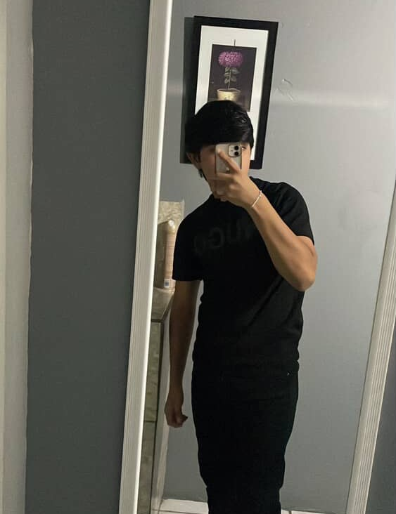

Yo lo queria mucho:(
Todo estuvo bien durante aproximadamente 10 meses, todo era "color de rosa" sin contar las pequeñas peleas por cosas normales q pasan.
Pero todo empezo cuando yo notaba que el tardaba mas en contestar y contestaba mas desanimado de lo normal (que no era algo normal en el), pero lo deje pasar para evitar esa platica, no le dije nada como por 1 semana, hasta que me di el valor de preguntarle y desde ahi empezo todo lo "malo".
|Desde ese dia empezamos a hablar de como se sentia cada uno y a la conclusion que llego el era que el no me podia ofreser o dar lo que yo merecia y que por eso no podia estar conmigo, y la verdad me saco mucho de onda y me aguite por un tiempo.
Yo al ver como estaba la situacion decidi decirle ahora como yo me sentia y llegamos a la conclusion que era mejor terminar para solucionar cada uno sus cosas para no "lastimar a la otra persona".
Mi idea era no hablarle durante todo el tiempo en el que pasaba eso pero no pude y seguiamos hablando todos los dias no al mismo ritmo pero si todos los dias.
Seguiamos asi hasta hace poco que yo me di cuenta que las cosas no podian seguir asi, hablar normal como si no hubiera pasado nada y estuvieramos normal pero con la diferencia de "sin el titulo" y le platique como me sentia al respecto sobre todo eso y para mi lo mejor fue terminar de una vez todo para no seguir con eso
Para mi fue alguien muy especial al ser mi primer novio y le guardo un cariño inmenso a pesar de como sucedieron las cosas, me enseño que no por querer mucho a una persona se tiene que aguantar todo o quedarse a pesar de ya no sentirse uno comodo.